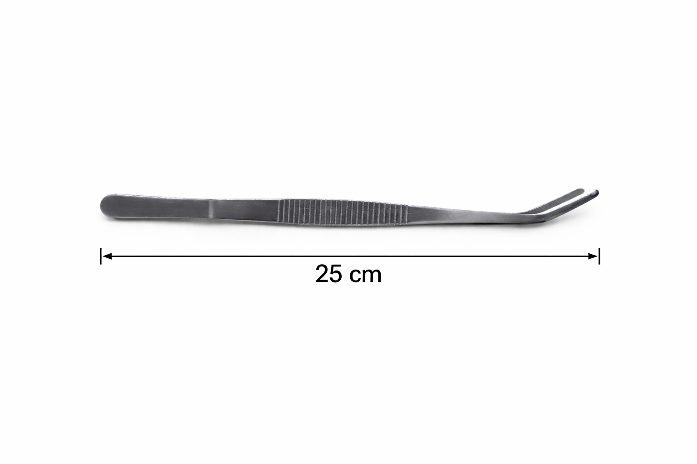

Profesjonalna strzykawka do nawadniania formikariów oraz precyzyjnego dozowania wody. Idealna dla początkujących i zaawansowanych hodowców mrówek.
Specjalna mieszanka 9 rodzajów ziaren dla mrówek Messor barbarus. Odpowiednio dobrany pokarm wspierający prawidłowy rozwój kolonii.
Probówki 16x100 mm do zakładania nowych kolonii. Idealne dla młodych królowych oraz rozwijających się kolonii mrówek.
Naturalny pokarm dla Messor barbarus. Len znajduje się w wygodnej probówce PS 16x65 mm.
Nowoczesne formikaria akrylowe oraz drukowane w 3D. Przygotowane z myślą o wygodnej i bezpiecznej hodowli kolonii mrówek.
Akcesoria drukowane w 3D ułatwiające codzienną opiekę nad kolonią.

Profesjonalna pęseta ze stali nierdzewnej do prac przy formikarium. Idealna do karmienia, sprzątania oraz przenoszenia elementów dekoracji.
✔ długości: 13 cm / 18 cm / 25 cm
✔ stal nierdzewna
✔ precyzyjna końcówka
✔ wygodna w użyciu